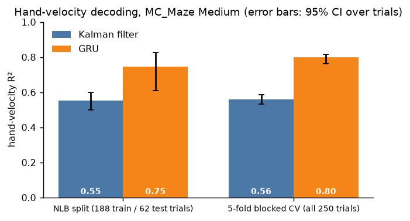
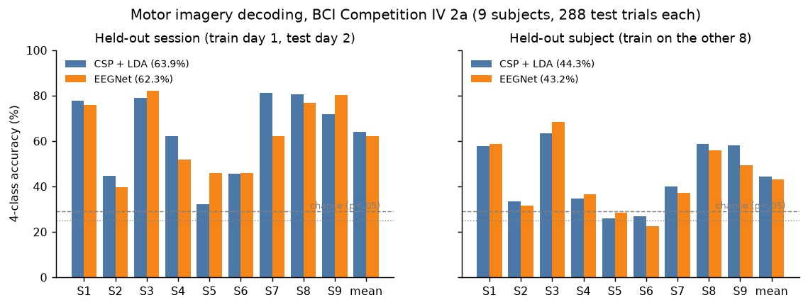

Neural decoding
Reading movement out of 152 neurons
Decoding a monkey's hand movement from motor-cortex spikes, and the ways I almost fooled myself.
I wanted to know what it actually takes to read movement out of a brain.
So I took a public recording from the Neural Latents Benchmark: 152 neurons in a monkey's motor and premotor cortex, recorded while it reached around a maze 250 times. The job is simple to say. Look at the spikes, predict where the hand is going.

Two decoders
The classic answer is a Kalman filter. It assumes two straight lines: the hand moves smoothly from one moment to the next, and each neuron's firing is a linear function of where the hand is and how fast it's going. Every 50 ms it predicts where the hand should be, then lets the new spikes correct the guess.
The other is a small recurrent network, a GRU with 128 units. It reads the spikes one bin at a time and keeps its own memory of the reach. It can learn things the Kalman filter can't, like "this reach has started, and it's a curved one".
The Kalman filter got an R² of 0.55. The GRU got 0.75. That gap was the easy part.

Not fooling myself
The hard part was making sure the numbers meant something.
Splits. Neighbouring moments in a recording look alike. Shuffle them randomly into train and test and the model gets to peek. So test trials come in contiguous blocks, and the GRU still wins: 0.80 against 0.56.
The baseline. My first Kalman filter scored 0.28. Wider bins and tracking position and acceleration, the way the original papers did it, got it to 0.55. A weak baseline makes any model look good, so it was worth getting right. I also made those fixes after seeing a validation score, which I say in the write-up.
Tests that catch real bugs. I built fake neurons with known tuning and checked the decoder could recover the hand. It couldn't: R² of −18. The Kalman update was inverting a matrix that's singular for one of the state terms. The synthetic test found it before any real number did.
The result I didn't expect
I ran the same comparison on EEG: nine people imagining moving a hand, their feet or tongue, decoded from 22 scalp electrodes. A well-known CNN, EEGNet, against a classic spatial filter, CSP + LDA.

The neural network didn't win. 62.3% against 63.9% on a new day, 43.2% against 44.3% on a new person, no significant difference. Who you're decoding mattered far more than which method: some people sit near 80% either way, others near 30%.
I like that result. With a few hundred trials per person, the old method already captures the signal. The network earned its keep on the spikes, where there's more to learn.
What this isn't
Everything here is offline. I decode recordings and score them against what happened. In a real brain-computer interface the person sees the cursor and adapts to the decoder's mistakes, and offline scores don't predict that well. The spike data is also one monkey on one day. This is a careful baseline study, not the state of the art.
But I understand the pieces now, and I know where the traps are.